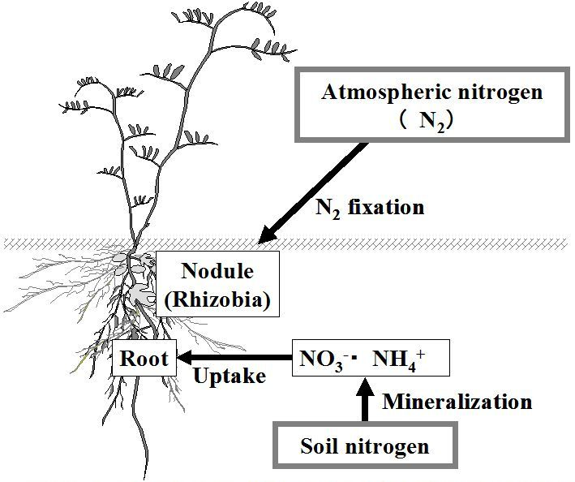

Los rizobios son uno de varios grupos de bacterias capaces de "fijar" nitrógeno, es decir, convertir el gas dinitrógeno en amoníaco y luego en moléculas orgánicas como los aminoácidos. Debido a esta capacidad, las bacterias fijadoras de nitrógeno son conductos importantes entre una reserva extremadamente grande de nitrógeno en la atmósfera y los seres vivos que de otra manera solo podrían obtener nitrógeno reciclándolo de las reservas existentes de nitrógeno orgánico (por ejemplo, aminoácidos, amoníaco, nitrato y nitrito).

A diferencia de muchas bacterias fijadoras de nitrógeno que pueden fijar nitrógeno cuando "viven libremente" (es decir, cuando no viven dentro de una planta huésped), los rizobios solo pueden fijar nitrógeno cuando se asocian con una planta que les proporciona carbohidratos. Los carbohidratos proporcionan energía para un proceso que requiere aportes sustanciales de energía (tanto ATP como el poder reductor del NADH). Los rizobios solo se asocian con legumbres, miembros de la familia de los guisantes. (Pero no todas las legumbres se asocian con Rhizobia y algunas que tienen asociados fijadores de nitrógeno pueden tener bacterias distintas de Rhizobia ) .

El establecimiento de una simbiosis exitosa requiere que los dos socios simbióticos sean compatibles entre sí durante todo el proceso de desarrollo simbiótico. Sin embargo, con frecuencia se produce incompatibilidad, de modo que una cepa bacteriana es incapaz de formar nódulos en una planta huésped particular o forma nódulos que son incapaces de fijar nitrógeno. Los mecanismos genéticos y moleculares que regulan la especificidad simbiótica son diversos e involucran una amplia gama de genes/señales del huésped y de las bacterias con varios modos de acción. En esta revisión, proporcionaremos una actualización de nuestro conocimiento actual sobre cómo ha evolucionado la especificidad de reconocimiento en el contexto de la señalización de simbiosis y la inmunidad de las plantas.